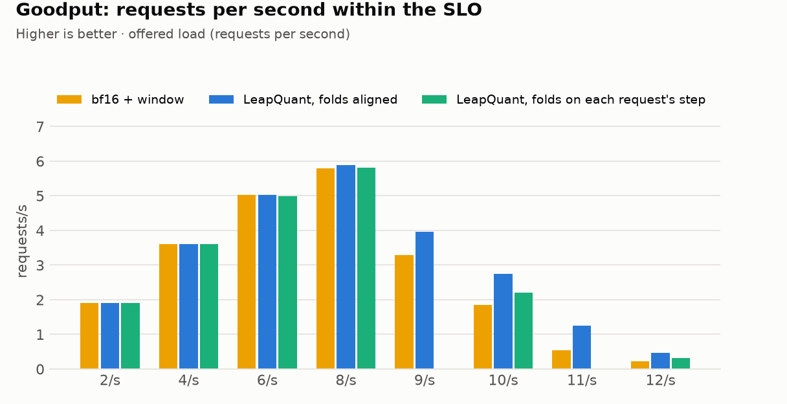

Open-loop load: goodput
Requests arrive at a fixed Poisson rate (a slower server does not get a lighter load); goodput counts the requests that met the SLO. Shape: 1,000 in / 1,000 out. No client-side cap: waiting in the server's queue is part of the time to first token.

| Offered, req/s | Server | Goodput, req/s | Completed, req/s | Output tokens/s | p99 TTFT, ms | Median ITL, ms | p99 ITL, ms |
|---|---|---|---|---|---|---|---|
| 2 | bf16 + window | 1.90 | 1.90 | 1902 | 102 | 13.2 | 56 |
| 2 | LeapQuant, folds aligned | 1.90 | 1.90 | 1899 | 98 | 13.6 | 60 |
| 2 | LeapQuant, folds on each request's step | 1.90 | 1.90 | 1898 | 97 | 13.8 | 60 |
| 4 | bf16 + window | 3.61 | 3.61 | 3611 | 154 | 16.1 | 68 |
| 4 | LeapQuant, folds aligned | 3.60 | 3.60 | 3600 | 133 | 16.4 | 97 |
| 4 | LeapQuant, folds on each request's step | 3.60 | 3.60 | 3599 | 141 | 16.7 | 98 |
| 6 | bf16 + window | 5.02 | 5.02 | 5018 | 192 | 21.8 | 118 |
| 6 | LeapQuant, folds aligned | 5.03 | 5.03 | 5034 | 198 | 20.7 | 129 |
| 6 | LeapQuant, folds on each request's step | 4.99 | 4.99 | 4991 | 191 | 22.3 | 150 |
| 8 | bf16 + window | 5.79 | 5.79 | 5794 | 219 | 32.1 | 181 |
| 8 | LeapQuant, folds aligned | 5.89 | 5.89 | 5891 | 213 | 29.5 | 202 |
| 8 | LeapQuant, folds on each request's step | 5.81 | 5.81 | 5806 | 196 | 31.9 | 201 |
| 9 | bf16 + window | 3.28 | 5.94 | 5936 | 236 | 38.0 | 236 |
| 9 | LeapQuant, folds aligned | 3.96 | 6.09 | 6085 | 234 | 34.7 | 222 |
| 10 | bf16 + window | 1.85 | 5.94 | 5943 | 9710 | 43.6 | 246 |
| 10 | LeapQuant, folds aligned | 2.75 | 6.19 | 6193 | 2172 | 43.2 | 260 |
| 10 | LeapQuant, folds on each request's step | 2.20 | 6.06 | 6061 | 3743 | 43.1 | 267 |
| 11 | bf16 + window | 0.54 | 5.98 | 5977 | 16373 | 46.4 | 235 |
| 11 | LeapQuant, folds aligned | 1.26 | 6.23 | 6232 | 9781 | 46.3 | 258 |
| 12 | bf16 + window | 0.22 | 6.03 | 6026 | 21342 | 48.2 | 282 |
| 12 | LeapQuant, folds aligned | 0.46 | 6.29 | 6289 | 15332 | 46.4 | 286 |
| 12 | LeapQuant, folds on each request's step | 0.31 | 6.14 | 6145 | 17001 | 48.6 | 296 |
Serving: throughput, time to first token, speed per user
Qwen3.5-9B on one GPU, SGLang, at several numbers of concurrent requests. One chart and one table per metric, as in the benchmark reports this layout follows.
Not measured yet. The SGLang server cannot start until the NVIDIA driver is upgraded (its kernel package needs CUDA 13). Then run runbook/stage_b_baselines.sh b2 and runbook/stage_f_end_to_end.sh serving. This page fills in from serving_*.log.
Metrics
- Output token throughput, tokens/s: generated tokens per second, all requests together.
- Total token throughput, tokens/s: input plus generated tokens per second.
- Request throughput, requests/s: completed requests per second.
- Time to first token, median and p90, seconds: the delay before generation starts.
- Speed per user, median and p90, tokens/s: 1000 ÷ time per output token of a request. The p90 figure is the speed that 90% of requests reach or beat.
- Completion time, median, seconds: the whole request.
Generated 2026-11-14 08:15 from results/openloop-final, results/openloop by reports/generate_reports.py. All reports.